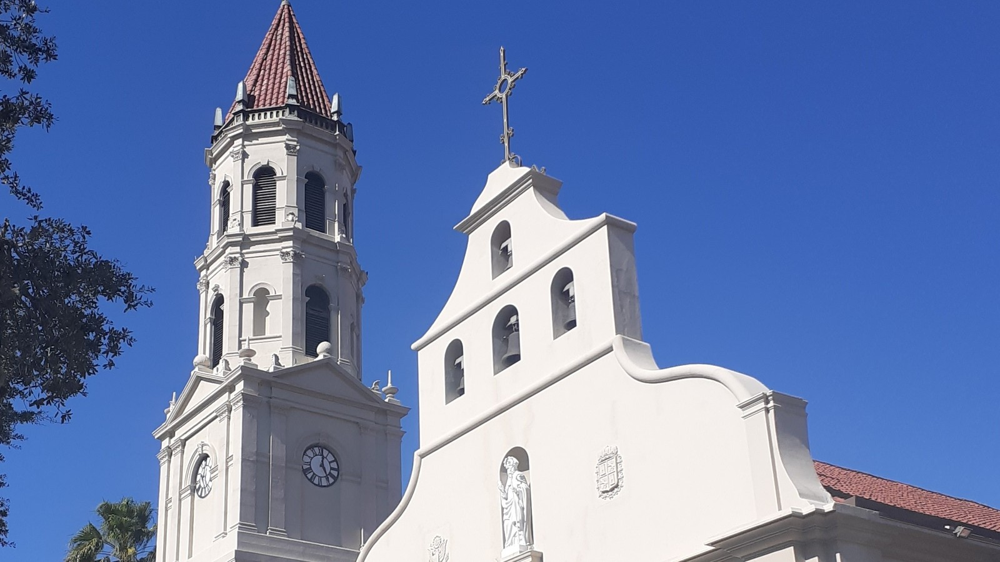

Karibu
Karibu katika tovuti ya parokia.
Cathedral Basilica of St. Augustine, iliyoanzishwa mwaka 1565, iko St. Augustine, Florida. Tovuti hii ni nakala isiyo rasmi, iliyoandaliwa chini ya mafundisho ya EVE Glyph Design, kwa uangalifu uleule wa uhariri kama tovuti rasmi ya parokia. Chanzo rasmi kinabaki thefirstparish.org.
Parokia moja, watu mmoja
Imani inaishi hapa hapa, pamoja na jumuiya inayoomba, inayoadhimisha na kuwatunza wengine.
Ratiba ya Misa
| Siku | Saa |
|---|---|
| Misa ya Kesha, Jumamosi | 5:00 PM |
| Jumapili | 7:00 AM · 9:00 AM · 11:00 AM · 5:00 PM |
| Jumatatu – Ijumaa | 7:00 AM |
| Jumamosi | 7:00 AM |
| Upatanisho — Jumamosi | after 7:00 AM Mass · 3:30 – 4:30 PM |
| Ibada ya Ekaristi — siku za kazi | after 7:00 AM Mass until noon (Wed. from 10:00 AM) |
| St. Benedict the Moor — Jumapili | 8:00 AM |
Saa za Ibada ya Ekaristi zimetolewa kufuatana na taarifa ya parokia ya tarehe 4 Januari 2026; ukurasa wa tovuti tuli bado unaonyesha saa ya mwisho ya zamani. Misa ya Jumapili ya saa 8:00 AM inaadhimishwa katika kanisa la St. Benedict the Moor, kanisa la pili la parokia.